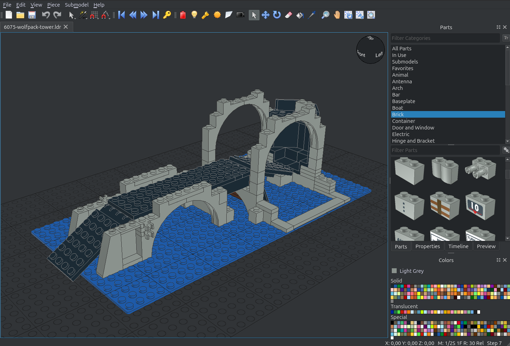
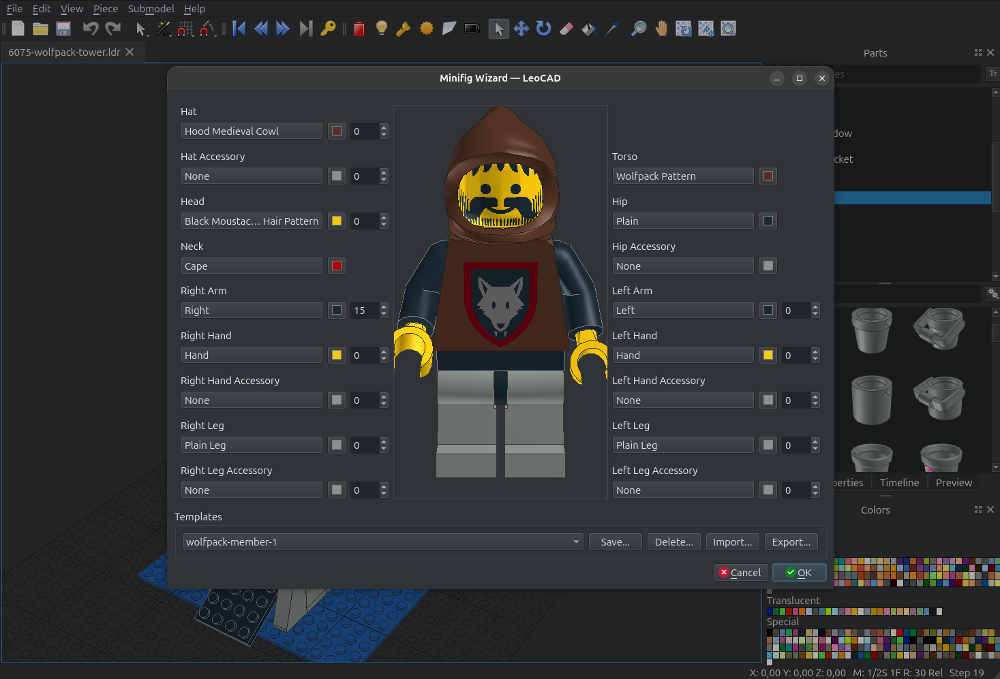
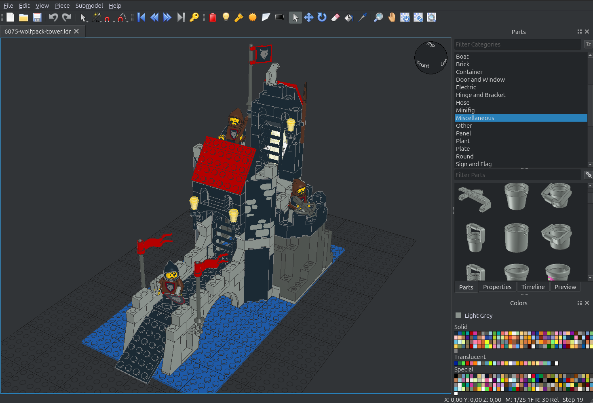
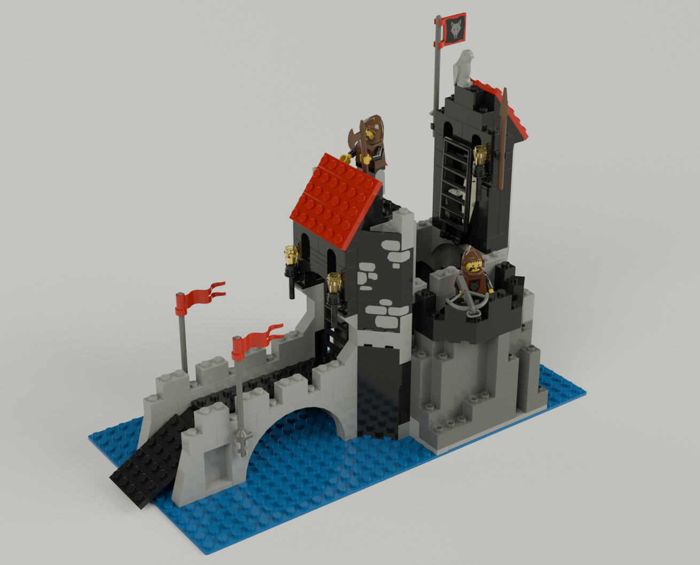
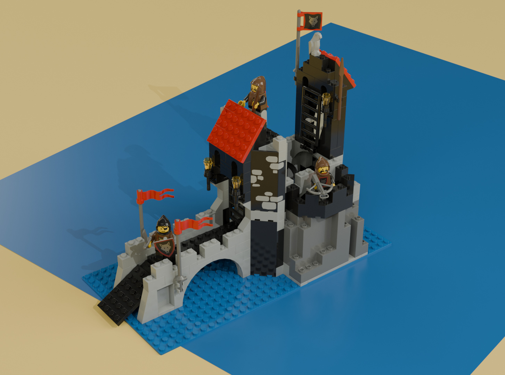
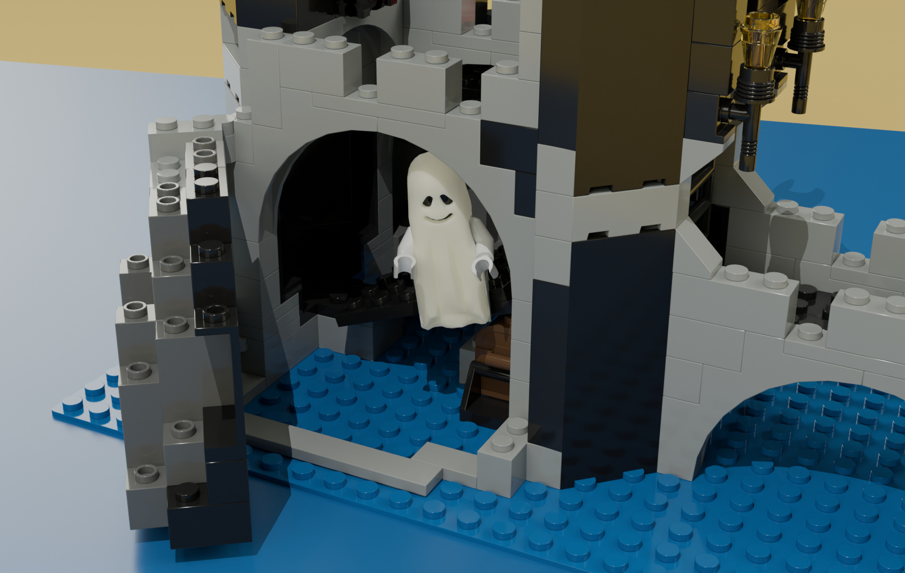

Realistické 3D modely Lega s LeoCAD a Blender

Před pár dny jsem šel okolo obchodu s použitými dílky a stavebnicemi Lego, a dostal velkou chuť si něco zase postavit (v dětství jsem tím strávil moře času). Bohužel, moje vlastní sbírka se v průběhu času někde ztratila a hned jít a něco si koupit se mi nechtělo. Rozhodl jsem si nejprve oživit vzpomínky pomocí open source nástroje LeoCAD, který slouží k vytváření 3D modelů z Lega.
Jako první padla volba na "Ostrovní vlčí doupě", které jsem znal jako malý jen z katalogu (strana 22).

Přední strana krabice 6075 Wolfpack Tower z roku 1992 (brickset.com)
Třebaže se stavebnice už dávno oficiálně neprodává, na internetu existuje řada webů (např. worldbricks.com) s originálními návody. Mimochodem, nerozbalená se dnes nabízí za cenu okolo 24000 korun.
LeoCAD
V porovnání s nástroji jako Blender nebo Unreal Engine působí LeoCAD velmi jednoduše. V něčem je trochu neergonomický (např. pohyb kamery, manipulace s dílky a figurkami, chybějící klávesové zkratky), ale s trochou cviku a trpělivosti se to dá zvládnout. Stavět Lego fyzicky je samozřejmě jiný zážitek, ale neomezené množství dílků (včetně těch, co jsem nikdy neměl) je skvělé. Samostatnou kapitolou je hledání. Stává se, že přesně vím jaký dílek potřebuju, jen nevím, jak se jmenuje - to bývá trochu frustrující.
Poznámka
Zprovoznit LeoCAD na Ubuntu (25.10) nebylo zcela přímočaré, ale povedlo se. Problém byl ten, že při instalaci prostřednictvím balíčků leocad a ldraw-parts (knihovna dílků) aplikace padala a snap nešel nainstalovat vůbec. Zahránil mě až flatpak, který běží bez problémů a dokonce obsahuje i zmíněnou knihovnu LDraw, kterou je jinak třeba doinstalovat ručně.

Uživatelské rozhraní LeoCAD s rozestavěným modelem

Průvodce tvorbou figurky

Hotový model
Jak je vidět z obrázků výše, LeoCAD je určený na vytvoření modelu. Vykreslit ho do fotorealistické podoby ale neumí. K tomu je potřeba použít jiný program, např. populární 3D editor Blender - viz následující kapitola.
Pro zájemce je model k dispozici v repozitáři na GitHubu.
Import a vykreslení v Blenderu
Poznámka
Ani zprovoznění Blenderu nebylo bezproblémové. V repozitáři Ubuntu je starší verze (4.0.2), což by nevadilo. Z nějakého důvodu ale nepodporuje moji GPU (Nvidia RTX 3060) a postrádá vestavěný denoiser, který výrazně urychluje vykreslování. Snap a flatpak nabízí nejnovější verzi, nicméně při pokusu otevřít položku Edit > Preferences aplikace v obou případech zamrzla. Prý se jedná o bug v Gnome, který by měl být opravený ve verzi 49.0.2. Zatím proto spouštím aplikaci z příkazové řádky pomocí následujícího workaroundu (běh přes XWayland), a vše funguje:
Importovat model do Blenderu jde např. pomocí pluginu Import LDraw. Stačilo postupovat podle návodu, jen mě trochu zmátl popis kroků pro import modelu (kroky související s Import 0ptions - viz zmíněný návod). Pointa je (1) vybrat model, který chci importovat, (2) nastavit cestu ke knihovně LDraw a pak spustit import.
Vykreslení pak může vypadat třeba takto:

Model vykreslený do fotorealistické podoby s jednoduchým pozadím
Výhodou Blenderu je, že se dá vyhrát i s kulisami. Moje pokusy jsou hodně jednoduché.

Model vykreslený s imitací modré podložky a žlutého pozadí

Detail otevíratelného boku věže. Pod duchem je vidět truhla s pokladem